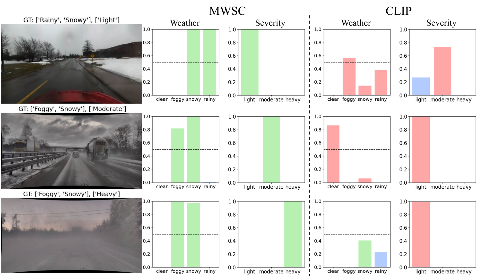
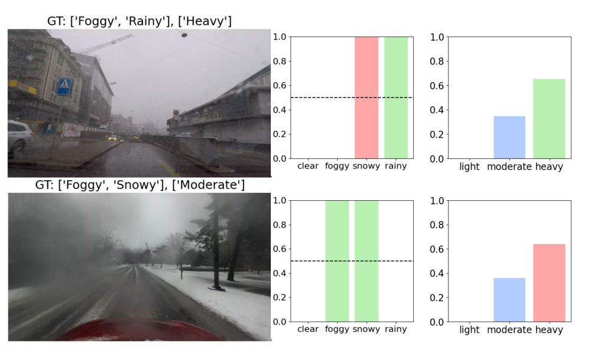

Abstract
Ensuring traffic safety in autonomous vehicles requires accurate weather and severity recognition, especially when operating within a defined ODD. However, most existing studies and datasets focus on single-label weather recognition and largely overlook severity classification, which limits the adaptability of autonomous systems. To address this, we created a comprehensive multi-label weather dataset with light, moderate, and heavy severity levels based on quantitative visibility thresholds aligned with ODDs. We constructed this dataset by prompting multiple VLMs to apply these criteria, then validated annotation quality against a human-labeled gold standard. On this new dataset, we introduce the Multi-Weather and Severity Classifier (MWSC), a novel multi-modal framework that simultaneously handles weather recognition and severity classification. MWSC employs a combination of cross-attention mechanisms to extract global and local image features and integrates them with text captions generated from a standardized, closed-vocabulary template for weather and severity to create robust feature associations for classifier training. Our experiments establish a new benchmark for environment perception in autonomous driving, where MWSC significantly outperforms widely-used baseline models across key metrics including mAP, accuracy, and F1-score, advancing vision-based techniques for safer and more reliable autonomous navigation in complex weather scenarios. The full dataset and code are publicly available in our repository at https://github.com/Yonsei-STL/MWSC.git, including licenses of all sources, human-annotated gold set, image lists and splits, prompts, and trained weights for reproducibility.
Method
The Multi-Weather and Severity Classifier (MWSC) separates two related tasks: weather recognition is multi-label, while severity recognition selects a single level. The weather vocabulary is Clear, Foggy, Rainy, and Snowy; the severity vocabulary is Light, Moderate, and Heavy.
From global–local refinement to image–text alignment
A CLIP image encoder extracts global and local visual features. Global-Local Cross Attention (GLCA) first refines the image representation. Image-Text Cross Attention (ITCA) then aligns the refined features with encoded class descriptions in both image-to-text and text-to-image directions. Separate multilayer perceptron heads produce weather and severity predictions.
Training combines binary cross-entropy for multi-label weather prediction and cross-entropy for severity prediction. At inference, weather classes are selected above a 0.5 probability threshold; when none passes, the highest-probability weather class is retained. Severity uses the highest-probability class.
Dataset
The dataset combines daytime images from ACDC, DEEP BLUE, DENSE, and SODA10M. Vision-language-model annotations are aggregated by voting, and reliability is evaluated against a separate human-annotated gold set. The main dataset uses a 7:1:2 training/validation/test split.
| Severity level | Number of images |
|---|---|
| Light | 28,418 |
| Moderate | 9,065 |
| Heavy | 2,722 |
| Total | 40,205 |
The study excludes nighttime, cloudy, and overcast scenes. The gold set is used to evaluate annotation quality, not to train the classifier or generate labels.
Experimental Results
The results below are the published MWSC rows for the CLIP ViT-B/32 configuration. Values are proportions, not percentages. Precision, recall, and F1 are weighted averages as specified in the paper.
| Task | mAP | Accuracy | Precision | Recall | F1 |
|---|---|---|---|---|---|
| Weather | 0.8974 | 0.9156 | 0.9343 | 0.9423 | 0.9381 |
| Severity | 0.9507 | 0.9092 | 0.9090 | 0.9092 | 0.9088 |
The reported model has 12.9 million learnable parameters. On the mixed-resolution test set, the paper reports 82.97 FPS, using an NVIDIA RTX 4090, batch size 1, and FP32 precision.

Evaluation scope and failure cases
The paper identifies confusion between heavy raindrop artifacts and snow, and overestimation of severity when snow or slush occludes the camera view. These examples are limitations of the evaluated model, rather than evidence of complete robustness to adverse weather.

Code and Data
The official repository provides the implementation and dataset-preparation instructions.
Implementation and preparation instructions · Annotation files
BibTeX
@article{ju2025mwsc,
title = {{Multi-Modal Cross-Attention-Based Multi-Label Weather and Severity Level Classification}},
author = {Ju, Hyeongjin and Nalcakan, Yagiz and Park, Incheol and Jin, Youngwan and Yeo, Sanghyeop and Kim, Shiho},
journal = {IEEE Access},
volume = {13},
pages = {215882--215896},
year = {2025},
doi = {10.1109/ACCESS.2025.3645363},
url = {https://doi.org/10.1109/ACCESS.2025.3645363}
}
Original publication
Hyeongjin Ju, Yagiz Nalcakan, Incheol Park, Youngwan Jin, Sanghyeop Yeo, Shiho Kim. Multi-Modal Cross-Attention-Based Multi-Label Weather and Severity Level Classification.
IEEE Access, 2025. Volume 13 · pp. 215882–215896.
DOI: 10.1109/ACCESS.2025.3645363